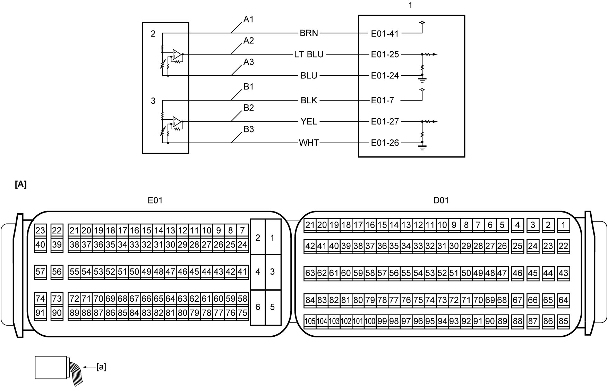

1A
| Accelerator Pedal Check |
Circuit Diagram

 "Expand image")
| [A]: | ECM connector (View: [a]) | B1: | APP sensor (sub) power supply circuit | 2 | APP sensor (main) |
| A1: | APP sensor (main) power supply circuit | B2: | APP sensor (sub) signal circuit | 3 | APP sensor (sub) |
| A2: | APP sensor (main) signal circuit | B3: | APP sensor (sub) ground circuit | ||
| A3: | APP sensor (main) ground circuit | 1 | ECM |
Troubleshooting
| Step | Action | Yes | No |
|---|---|---|---|
| 1 |
Parameter check
1)When ignition is “OFF”, connect SUZUKI scan tool to DLC.
2)Set ignition “ON”.
3)With all electrical loads turned off and accelerator pedal not depressed, check that the following parameters displayed on SUZUKI scan tool are as specified below.
•“Accel Position”: 0 to 5%
•“APP Sensor 1 Volt”: 0.60 to 1.10 V •“APP Sensor 2 Volt”: 0.30 to 0.50 V Is check result OK?
|
Go to Step 2.
|
Go to Step 3.
|
| 2 |
Parameter check
1)With accelerator pedal depressed fully, check that the following parameters displayed on SUZUKI scan tool are as specified below.
•“Accel Position”: 95 to 100%
•“APP sensor 1 volt”: 3.60 to 4.30 V •“APP sensor 2 volt”: 1.80 to 2.20 V Is check result OK?
|
End.
|
Go to Step 3.
|
| 3 |
APP sensor power supply circuit and ground circuit check
1)When ignition is “OFF”, disconnect APP sensor connector.
2)Check for proper terminal connection to APP sensor connector.
3)If connections are OK, set ignition “ON”.
4)Check that voltage between each of “A1” to “A3” circuits and “B1” to “B3” circuits is approx. 5 V.
Is check result OK?
|
Go to Step 6.
|
Go to Step 4.
|
| 4 |
APP sensor ground circuit check
1)Check that voltage between each of “A1” and “B1” circuits and ground is approx. 5 V.
Is check result OK?
|
Repair “A3” and/or “B3” circuits.
|
Go to Step 5.
|
| 5 |
APP sensor power supply circuit check
1)When ignition is “OFF”, disconnect “E01” connector from ECM.
2)Check for proper terminal connection to “E01” connector.
3)If connections are OK, check the following points.
•Resistance of “A1” and “B1” circuits: less than 1 Ω
•Resistance between each of “A1” and “B1” circuits and ground: infinity •Resistance between “A1” circuit terminal and other terminal at APP sensor connector: infinity •Resistance between “B1” circuit terminal and other terminal at APP sensor connector: infinity •Voltage of “A1” and “B1” circuits: approx. 0 V (When ignition is “ON”) Is check result OK?
|
Replace ECM and recheck parameter.
|
Repair or replace defective wire harness.
|
| 6 |
APP sensor signal circuit check
1)When ignition is “OFF”, disconnect “E01” connector from ECM.
2)Check for proper terminal connection to “E01” connector.
3)If connections are OK, check the following points.
•Resistance of “A2” and “B2” circuits: less than 1 Ω
•Resistance between each of “A2” and “B2” circuits and ground: infinity •Resistance between “A2” circuit terminal and other terminal at APP sensor connector: infinity •Resistance between “B2” circuit terminal and other terminal at APP sensor connector: infinity •Voltage of “A2” and “B2” circuits: approx. 0 V (When ignition is “ON”) Is check result OK?
|
Go to Step 7.
|
Repair or replace defective wire harness.
|
| 7 |
APP sensor check
1)Check APP sensor.
Is check result OK?
|
Replace ECM and recheck parameter.
|
Replace accelerator pedal assembly (incorporating APP sensor).
|